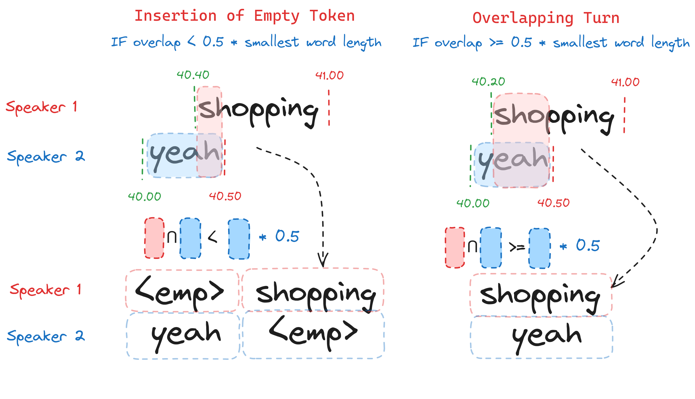
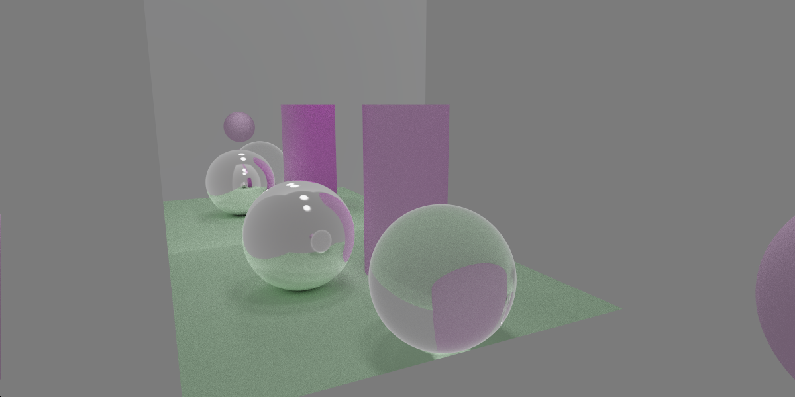
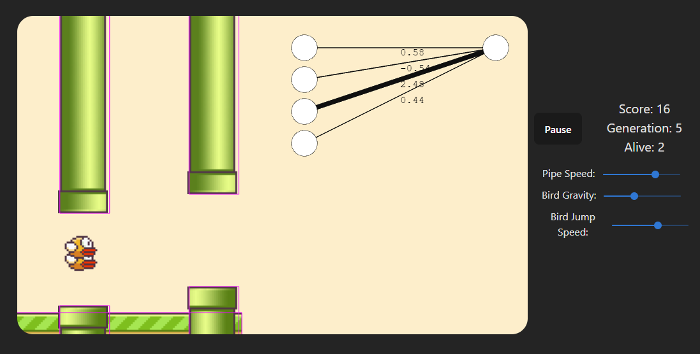
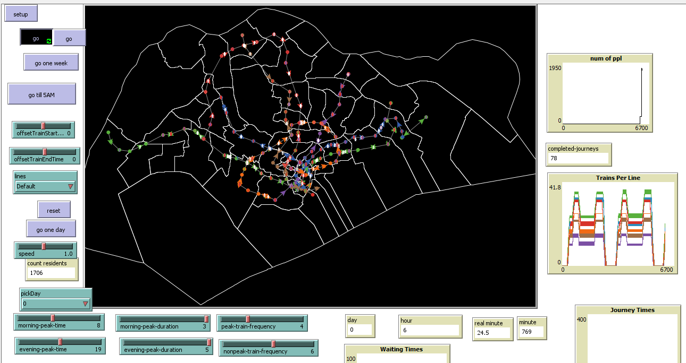
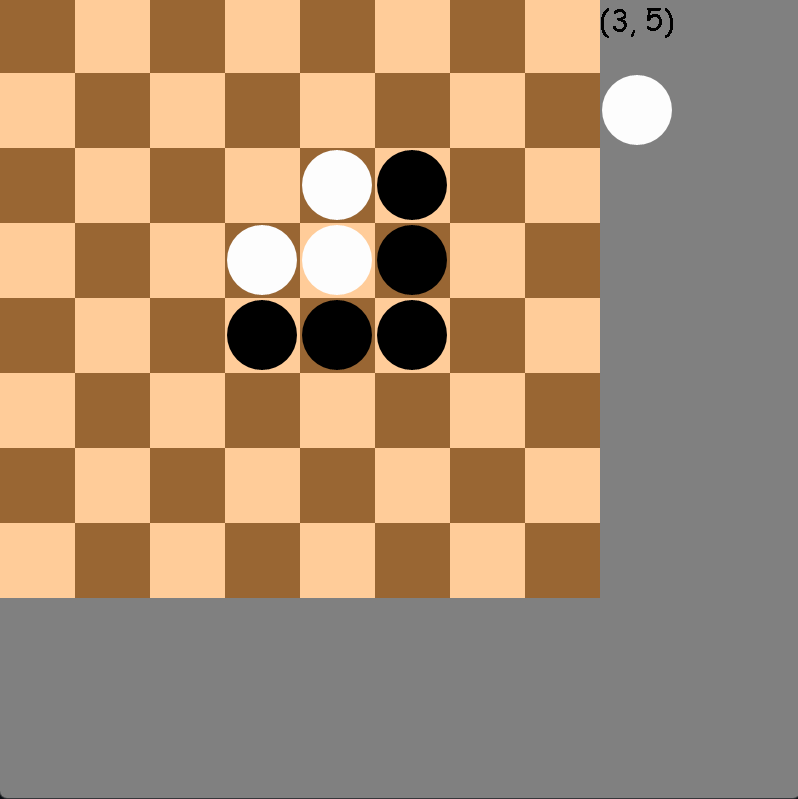

< about me >
I am currently undertaking a full-time Bachelor's of Science in
Artificial Intelligence & Computer Science at the University of
Edinburgh.
Here are
some technologies that I have been working with:
- Javascript
- Typescript
- Python
- Node.js
- Tensorflow
- Svelte
< experience >
2024
Squarepoint Capital:
Software Engineer Intern
Software Engineer Intern
06/24-09/24 : London, UK
Within Squarepoint Capital, I worked as a software engineering intern within the Data Infrastructure team. Generally, the team is responsible for the development, maintenance and monitoring of backend services, most prominently the timeseries database. My role was to develop a tool for users to have an end-to-end view of their query. This involved modifying the existing backend serivces written in C++ and modiying the C++ and Q clients.
2023
Coretech Security:
Software Engineer Intern
06/23-08/23 : Cheltenhem, UK
The internship at Coretech Security was within the Capability Development team. The team is responsible for the development of software in specific use cases for the company's clients. My role focussed on the investigation of telemetry tooling for the company's development needs and the development of an obfusaction tool for it's developed source code files. This was primarily developed for and written in C++. The process involves local variable renaming, function renaming and whitespace removal.
< projects >
Here are some projects that I have developed both in my free time and for
various university projects over a variety
of fields & interests that allowed me to learn more. In the future I will continue to add blog posts
in order to show the lessons and insights I gained
from each project



Full stack project that incorperates streamed data from the Twitter API and analyses sentiment in individual tweets in order to determine the overall sentiment in a certain stock.
Read My Post
- Svelte
- AWS

.png)
An implementation of chess in Python & Pygame. A custom chess engine is also built in to allow the user to play against an engine opponent.
Read My Post
- Python

.png)

IoT group project that uses a prototype device to collate personal UV data in order to generate insights and provide advice to end users.
Read My Post
- Vue.js
- Arduino



< education >
2024
MInf Informatics Year 5
09-24-05/25 : University of Edinburgh, UK
2023
MInf Informatics Year 4
09-23-05/24 : University of Edinburgh, UK
Introduction to Mobile Robotics • Computer Graphics Rendering • Automatic Speech Recognition • Parallel Programming Languages and Systems • Operating Systems • Algorithms and Data Structures • Natural Computing • MInf Project (Part 1)
2022
Exchange Year
09/22-05/23 : Singapore Management University, Singapore
Principles of Machine Learning • Agent-based Modelling and Simulation • Introduction to Computer Security • Ethics and Social Responsibility • Data Security and Privacy • Principles of IoT Systems • Mobile and Pervasive Computing• Natural Language Communication
2021
MInf Informatics Year 2
09/21-05/22 : University of Edinburgh, UK
Introduction to Algorithms and Data Structures • Software Engineering and Progessional Practice • Computer Systems • Foundations of Data Science • Discrete Mathematics and Probability • Reasoning and Agents
2020
MInf Informatics Year 1
09/20-05/21 : University of Edinburgh, UK
Introduction to Computation • Object-Oriented Programming • Cognitive Science • Introduction to Economics • Introduction to Linear Algebra • Calculus and its Applications